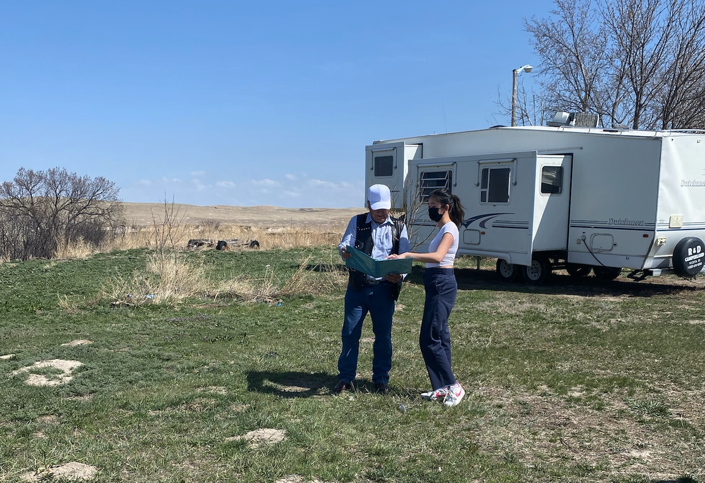

Engineers Without Borders (EWB) is a fully student-run project team dedicated to solving real-world engineering problems. In the Cornell University EWB Chapter, I was a part of the Domestic Team that aimed to create a solution that addressed the homelessness and overcrowding issues in the Oglala Lakota Tribe in Pine Ridge, South Dakota.
I joined as a member of the team in Fall 2020, where the project was initially centered around creating a mobile home for the residents. I became the project lead in Spring 2021 and organized a trip to Pine Ridge (which had been delayed due to the COVID-19 pandemic). Once we got the opportunity to travel to the community and speak to the elders, we realized our design was not a feasible option for the community's needs, and we shifted our focus to designing a more permanent, foundational home.
I authored the technical report below in Fall 2021 to submit to CECorps (domestic organization for Engineers Without Borders) to establish our project under their guidance.
CECorps x Cornell EWB Work Plan PDF
The end goal of our project was to create construction documents for small, replicable 20’x24’ homes for the elders of the community and conduct research into installation locations, zoning regulations, and grants that applied to our project. Unfortunately, domestic laws prohibited us (a group of seven college students) from being actively involved in the construction phase.
After submitting this report, I led the design of our project from inception (Spring 2021) to completion (Spring 2024).
As the lead of our Domestic project, I was in charge of a team of around 7-10 students (depending on the semester). I also led the MEP design and served as an AutoCAD consultant for my team. I also worked with the other trades to ensure smooth integration the home.
To keep things running smoothly, I held weekly meetings with my team to ensure that progress was being made and that everyone was on the same page about the progress that was being made. I redesigned our documentation protocols to push for more consistent documentation to aid future members and more clearly define our short and long-term project goals. Members also got individual feedback every semester to help them get the most out of the team.
We had design deliverable deadlines twice times a semester, where each team member would present a drawing or deliverable that they have been working on and what they have learned from that experience. It also allowed us to keep track of each other and see how the design needed to be iterated upon, since this was a multifaceted project that included civil, architectural, mechanical, electrical, and environmental engineering students, as well as a policy student. Having these deadlines allowed us to track our progress and move forward, as well as learn about the technical work that someone else was doing.
Setting lines of open communication was a key factor in managing a team of diverse students!
I was responsible for interviewing, recruiting, and onboarding new members every semester for the team. I redesigned our onboarding curriculum to include a weekly AutoCAD workshop and created a peer mentoring system for new members to shadow and assist returning senior members.
I managed our relationships with First Families Now, our community partner. We met with a representative of the organization monthly to present our progress in the project, ask relevant questions, and receive feedback to ensure that what we were designing was the best suited for the needs of the community.
 Photo from our site visit: I was asking a community elder about his opinion of our design.I also helped with networking and connecting our team to professional engineers who assisted us with ensuring our deliverables were of the best quality. We met with different professionals at least once a month, with frequent email communications about our progress.
I was largely responsible for the mechanical and plumbing drawings and assisted the electrical team with their drawing. My main responsibilities included putting together the MEP construction set, and confirming that these designs worked with the structural and architectural plans.
For the mechanical set, I calculated the loads of each room to select an adequate wall heater, and exhaust fans for the kitchen and toilet, and sized the ductwork. I also included a wood stove design option, as having a wood stove was the priority to the elders using the homes. I drafted the design on AutoCAD and made revisions based on recommendations from professional mechanical engineers. For the electrical set, I assisted with drafting the receptacles in the electrical drawing and creating the breaker schedule. For the plumbing set, I drafted the hot/cold water and wastewater pipe plans and riser diagrams.
The MEP design plans can be found below: